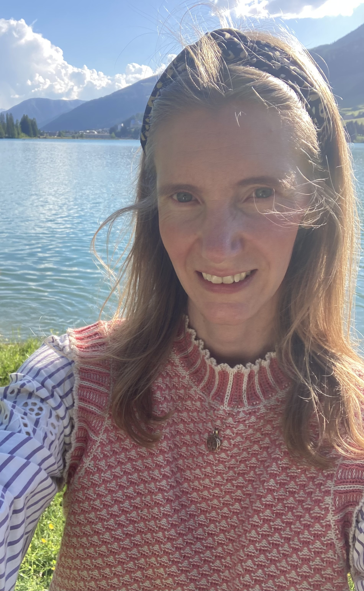
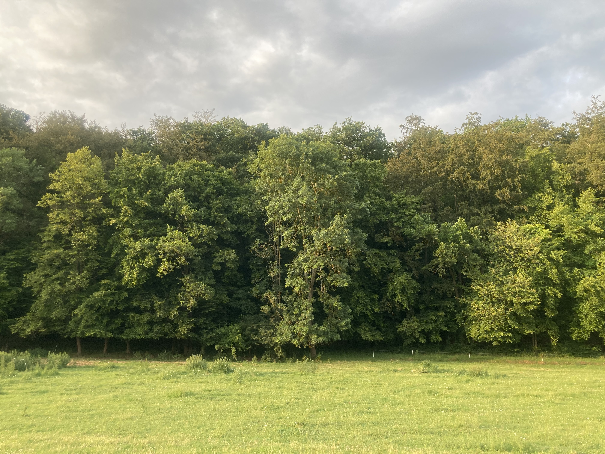
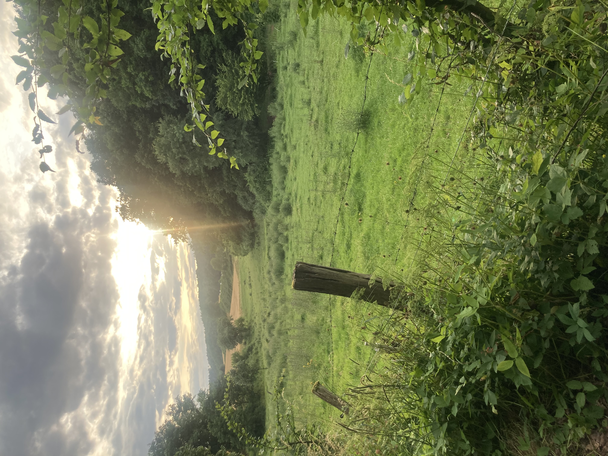

About


What am I working on?
I work on the integration of sustainability objectives into business and finance, with a particular focus on nature-related decisions.
Over the last years, this has included:
- Sustainable project finance and the application of the mitigation hierarchy,
- Integrating multiple sustainability objectives and KPIs — such as reuse or circularity of materials, energy efficiency, material choices, biodiversity strategies and carbon reduction measures — into real estate development,
- Advancing the integration of nature- and climate-related targets into business and financial decision-making,
- Climate- and nature-related physical and transition risks, and nature-based adaptation and resilience measures,
- Nature and carbon credit policy and environmental markets.
More recently, I have been developing this work further through quantitative, model-based approaches to decision-making under uncertainty. This includes a Bayesian sequential model for ecosystem restoration.
How did I get there?
There is a biographical path to it, as well as one of professional development. I grew up in rural Hesse, Germany, in an area characterised by small-scale farming and close-to-nature forest management. The region is well known for its agroecological practices which are taught at the Faculty of Organic Agricultural Sciences at the University of Kassel in Witzenhausen. My grandmother still owns farmland and through my family, agriculture was a part of my childhood. In this context, nature-related decisions were primarily economic decisions, but preserving natural resources and ecosystems was a means of future-proofing agricultural livelihoods and business, while living with animals involved a great deal of care.
As a student, while being a sampler across subjects and topics across economics, psychology, applied computer science, philosophy, social sciences, computational neuroscience and cultural and art history initially, my interests converged toward methodological range.
The topic of how domain kinds, individuals, processes and their dynamics and interactions condition methodological choices therefore became a focus. Where do methodological choices reflect domain features, and where are they mostly driven by epistemic conditions and constraints? What conditions make different epistemic types of inference internally or externally valid? How to evaluate model choice as well as its value(s) of information?
Particularly the area of embodied cognition at Humboldt University in Berlin, where I worked as a research assistant for six years, was a valuable entry point into looking at social-ecological systems through a systemic lens and learning about various inferential approaches to drawing conclusions from observations and from propositional knowledge. Professional roles in business development, research and development, the built environment, and technical fields have added experience in project design and implementation, management, technical expertise and team leadership over 15 years of work experience across sectors.
I am still drawn to fields that allow a combination of developing workflows for methodological range and depth, technical expertise and domain knowledge, and applied work.
Nature finance, sustainable business and ecological economics are fields in which much of this methodological, technical and practical expertise can not only be applied, but also put to the purpose of improving how humans interact with their environment, natural resources and biodiversity — towards relationships that are less harmful and distribute benefits more fairly across humans and other species.
Professional affiliations and expert roles
- IUCN Impact Mitigation and Ecological Compensation Thematic Group member.
- Member of the IUCN Commission on Ecosystem Management.
- Ecosystem Services Partnership member.
- Member of the Society for Conservation Biology.
- IPBES Contributing Author to the Business and Biodiversity Assessment 11/23 – 02/26. Find the full "Methodological assessment of the impact and dependence of business on biodiversity and nature’s contributions to people (business and biodiversity assessment)" and related materials here: https://www.ipbes.net/business-impact
- European Commission Joint Research Centre, External expert on Nature Credit Price Formation and Sustainable Market Development 01/26 – 08/26. Report forthcoming.
- SBTi Expert Working Group on Timber and Wood Fibre Pathways, expert working group member 05/2025 – 04/2026.
- Leipzig University, Leipzig, Germany, IMISE, Affiliated Researcher.
